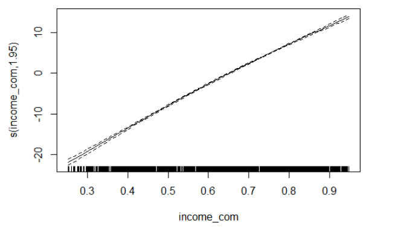

| models | R_square |
|---|---|
| total expenditure as smooth terms | 0.0379077 |
| income composition of resources as smooth terms | 0.7903460 |
| total expenditure as smooth terms adjusted by status | 0.2422911 |
| income composition of resources as smooth terms adjusted by status | 0.7903013 |
The model of income composition of resources as smooth terms (M6) has the highest R squared value, which is 0.790346.

Looking at the spline model we have, the trend is not curvy, which indicate that a liner model may be preferred to reduce over-fitting.
| models | R_square |
|---|---|
| total expenditure as predictor | 0.0326109 |
| income composition of resources as predictor | 0.7892844 |
| total expenditure and status as predictor | 0.2336129 |
| income composition of resources and status as predictor | 0.7894635 |
Checking Assumptions
According to the all R squared value we have for all linear models, the one with income composition of resources and status as predictor (M8) have the highest R squared. Residual vs fitted plot, QQ plot, scale-location plot, and leverage plot were checked for linear model assumptions. Only the QQ plot shown a deviation exist on the left tail, which means normality is slightly violated. Other assumptions are satisfied. Hence, we do have a good fit since assumptions are mostly satisfied.
To compare all of the linear mixed models we have, we need to compare them by likelihood ratio test (lrtest()). We compare two model with different complexity by the p-value we have in the test. If the p-value is smaller than our significant level 0.05, we are able to reject null hypothesis that simpler model have similar prediction accuracy as more complex model, which means picking complex model is more statistically significant. Hence, by our model construction, the complex model in each pair of test is the model that include developing status variable. Then, we compare (M3, M9) and (M4, M10).
| lrtest | P_value |
|---|---|
| Likelihhod ratio test between M3 and M9 (Total Expenditure) | 0.000000 |
| Likelihhod ratio test between M4 and M10 (HDI) | 0.238603 |
According to the p-value we have, only adding variable status to total expenditure model has a significant improvement. Hence, M9 and M4 would be compared by AIC with final linear and spline models. They cannot be compared by likelihood ratio test again since they does not sharing same predictors.
| models | R_square |
|---|---|
| linear model | 0.7894635 |
| spline model | 0.7903460 |
| Statistics | AIC.value |
|---|---|
| AIC of picked linear model M8: | 15172.54 |
| AIC of picked spline model M6: | 15159.38 |
| AIC of picked linear mixed model: M4 | 15177.39 |
| AIC of picked linear mixed model: M9 | 18542.02 |
According to the table we have, the R squared value for both models are pretty close. Though spline model yields better fit based on the score, a linear model may be better choice since the spline model we plotted is very close to a linear line. Choosing a linear model with almost the same wellness of fitting could reduce over-fitting.
By comparing AIC in Table, though spline model also has the smallest AIC value, most of them have very close AIC. Both our linear mixed model have higher AIC values. Since the linear model is our next-best model and we would like to reduce over-fitting, the linear model with Income composition of resources and status as predictor as predictors is our best model in this section, which means income composition of resources (HDI) has stronger relationship with life expectancy than health expenditure.
| models | MSE |
|---|---|
| Pruned Regression Tree | 6.978559 |
| Bagging | 3.682146 |
| Random Forest | 3.420492 |
| Gradient Boosting | 6.890100 |
| Extreme Gradient Boosting | 3.557269 |
According to the MSE table, we can see that Extreme Gradient Boosting model has the smallest test MSE, which is 3.345888. Pruned Regression Tree has the largest MSE 6.978559, indicating a worse fit. Low test MSE shows high performance and low over-fitting. Hence, we may pick extreme gradient boosting model as our final model to predict life expectancy.
According to the data exploratory plots we have, the relationship between health expenditure and life expectancy is not strong. The models that only contains total expenditure and status highest AIC, which means they fitted badly. However, in most of our plots, the relationship between HDI and life expectancy is strong. We also have pretty well fitted models with HDI as predictor have adjusted R squared over 0.79. Furthermore, in our variable importance plots in machine learning models, HDI is the one of the most important features across all models. Hence, we concluded that HDI have greater impact on life expectancy than the other.
Though including it did improve model performance, adding development status into our model does not have any significant effect according to the model comparison results.
Predicting life expectancy by extreme gradient boosting model had the best performance. Variable ‘HIV_AIDS’, ‘income_com’, ‘adult_mo’, and ‘schooling’ are the most important features to predict life expectancy.
According to the result we have, if the governments aim to increase life expectancy of the population, they should focus on factors that will increase the HDI. Not just spending too much money health development. In may cases, better health treatment and medical technologies does not benefit everyone. For most of the population, even poorer people, their health conditions need much longer time to respond to larger health expenditure than richer people. Additionally, people who would like to search for some counties to stay and try to live longer could choose countries with high HDI, rather than high health expenditure. For government or social organizations that would like to predict local life expectancy, they need to focus on HIV infection records, local HDI, adult mortality, and number of years of schooling. Their values are statistically significant on predicting life expectancy. Fitting a extreme gradient boosting model would yield more accurate values a based on our research result.
Limitations:
Since we impute NAs by mean value, we may result in biased standard error, variance, and sample mean. Our estimate may be pulled by other observations.
Since we have 16 years of observations per country and we investigate the data-set as a whole, our observations are not totally independent. Also, we ignored the structural difference between countries, like race and climate.
Though in model comparison, some spline models have better performance than the linear model, picking a spline model also increase our risk on over-fitting.
We only fitted spline models with 3 knots. We should also vary it to compare spline models with different knot numbers.
In many of our machine learning models, we can see there are only a few variables that dominate our model, which means, in further study, we could reduce the model complexity but also have similar performance.
Copyright © 2022, Shiyuan(Eric) Zhou.